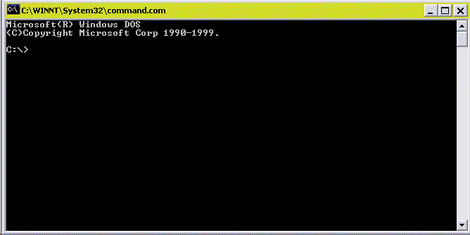
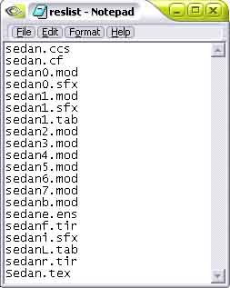

Step 4: FP Wolf's RESTools Overview
The RESTools are a collection of DOS and windows programs that pack, unpack, and convert file formats to and from Viper Racing. If you don't have these tools, go to http://members.aol.com/racingwolf999/ and download the RESTools. Extract the ZIP to a folder, like C:\tools.
All ready?
First things first, activate the sedan.car, and copy it to the tools folder.
Open a DOS prompt, browse into the tools folder (using the DOS Prompt of course), and type, rescrack sedan.car

You will see a bunch of files listed, then it will say X files extracted. Type exit to get out of the DOS prompt.
There should be a bunch of files that all start with the name "sedan". You will be needing a few files from here for your car. First, make a new folder, naming it the same as your car's short name.
COPY mktex, mkres, mkcar, and mksfx into this folder.
Move the car's 3D Files you exported AND the textures into this folder as well.
COPY sedan.ccs, sedan.cf, sedane.ens, sedan1.tab, and sedanL.tab into the car's folder.
If you are feeling lazy, you can download the above files here.
RENAME the files by replacing sedan with your car's short name. Don't get rid of the e in ens, nor the 1 and L in the tabs.
Now you are almost ready to start conversion, but first, an overview of the tools.
rescrack opens any packed kind of file in Viper Racing. These can be the *.res files, the *.car files, or the *.trk files. Similar to a ZIP file. To use, you type rescrack filename.ext and it will extract the file you typed in. Rescrack will not work on locked files.
mkres packs up a list of files into a res file of your choice. It uses a text file that has a bunch of files listed, each file on one line, as shown in the below image.

You type mkres filename.ext @reslist.txt
filename.ext is the name of the res file, and @reslist.txt says what text file is the list, for example,
mkres vanqsh.car @vanqsh.txt
Tells mkres to pack a RES file, using vanqsh.txt as a file list, and to name it vanqsh.car
mktex converts TGA images into *.tex files for use in Viper Racing.
The syntax is:
mktex texture.tga texture.tex /a
texture.tga is the source tga file, texture.tex is the tex file you want, and /a is an optional switch.
mktex has multiple switches. /a preserves the alpha channel, more or less transparency is applied to all depending on the greyscale of the alpha channel. /t makes transparency, all with low or no alpha channel is opaque. /m# defines the mipmapping: 0 = never mip, 1 = can mip, 2 = always mip. /w# stands for wrap, 0= wrap uv, 1 = wrap u, 2 = wrap v, 3 = wrap none
mksfx takes a wav file and converts it to the sfx file Viper Racing uses. The input file MUST be 22 KHz 16-bit MONO!
There are very few sitches in mksfx. -L tells mksfx this file is a looping file (like engine sounds), and -a says its converting an ADPCM-encoded wav file.
mkcar converts a txt file to a cf file. The syntax is:
mkcar textfile.txt cffile.cf
textfile.txt is the txt conversion, and cffile.cf is the cf file you want to make.
convert converts tex files into tga files, but has two problems. One, it has the image mirrored horizontally, and Two, it does not convert the alpha channel.
Syntax is:
convert filename.tex
filename.tex is the file you want to convert.
cf2txt is a windows program (woohoo) that converts a cf file into a txt. Just open it, browse to the folder, click on the CF, and hit Save.
Once you are done reading all this, you can move ONWARD.